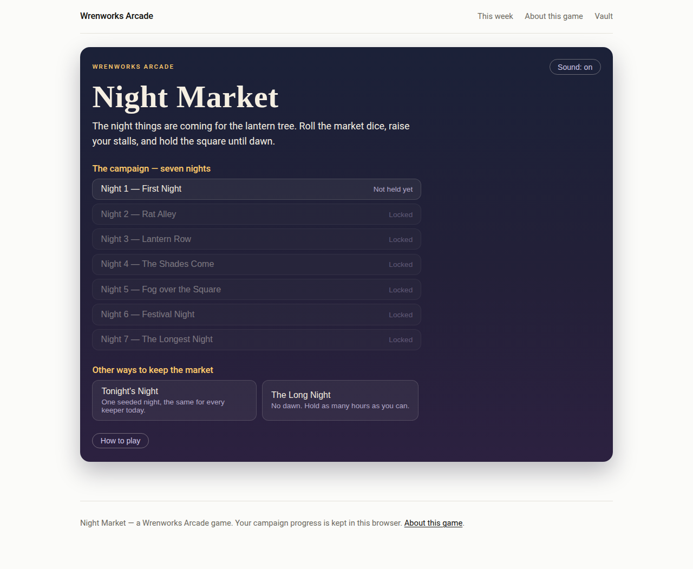
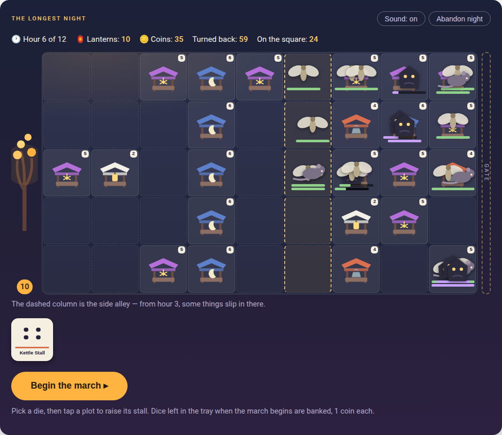
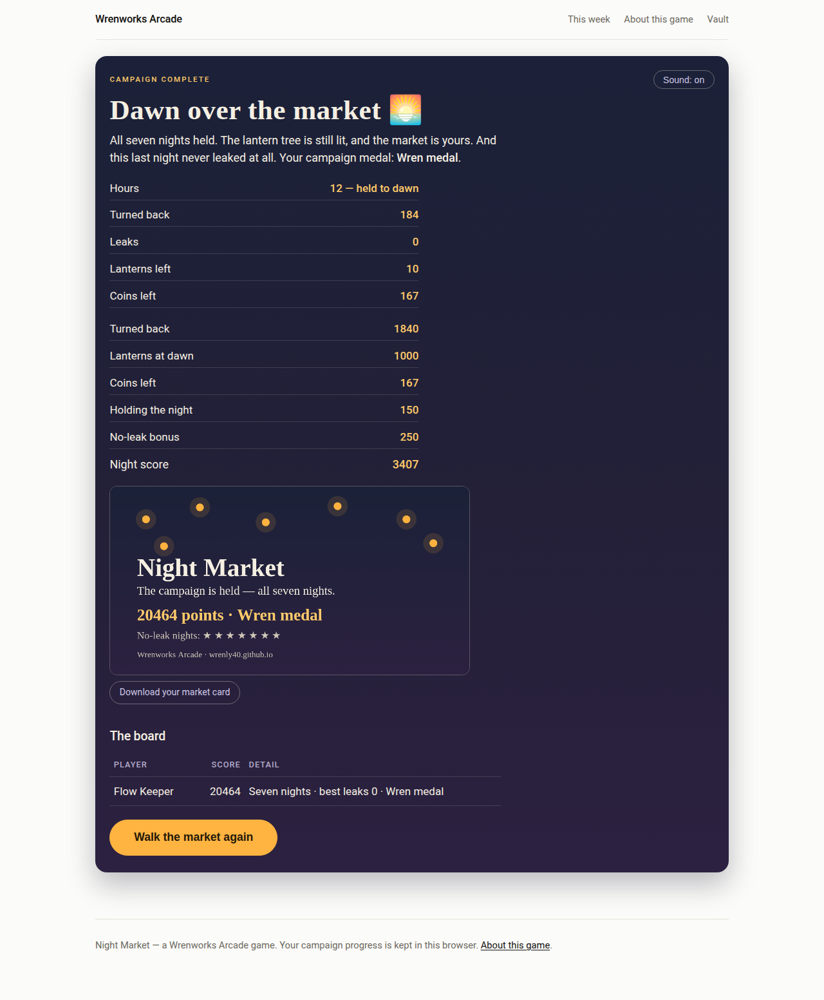

In the bank · Dice-placement defence
Night Market
Every night, the things come out of the dark and walk the five lanes of the market square, making for the lantern tree at its heart. You are the keeper. Each hour you roll four market dice — and each die's face is a stall: spend the die to raise that stall on any plot, and your stalls do the rest, firing east down their lanes while the night walks into them. What you roll decides what you can build and where it earns. Hold all seven nights to dawn and the market is yours.
Nothing is left to luck alone. A die you don't spend becomes a coin, kills pay bounties, and any die can be flipped to any face for three coins — so an unkind roll costs you, but it can never strand you. The skill is in the placing: which lane, which column, and when to pay for the stall the dice didn't offer.



How it plays
- The campaign: seven seeded nights, each harder than the last — moths first, then rats that scamper when hurt, then shades that take two lanterns if they get through. Most players finish the campaign in about 40 to 55 minutes.
- The dice: four an hour. A 1 raises a Crumb Cart, a 2 a Lantern Stall, a 3 a Bell Stall (its hits chill the night's step), a 4 a short-range Kettle Stall, a 5 a Firework Stall, and a 6 a Moon Stall. Bank a die for a coin, or flip any die to any face for 3 coins.
- Scoring: 10 for every thing turned back, 100 for every lantern still lit at dawn, 150 for holding the night, 250 more if nothing leaked, and a coin for every coin unspent. Fog and festival nights pay a quarter extra.
- Medals: bronze for holding all seven nights, silver if your best runs leak ten or fewer in total, gold for four or fewer, and the Wren medal when every night has a no-leak best. A no-leak night earns its star on the night list.
- Fog and festival: in fog every stall sees one column less; on a festival night the crowds are bigger and every kill pays an extra coin. Held nights can be replayed with a twist added.
- The side alley: on the later nights, some things slip into the square halfway across — watch the dashed column.
- The Long Night: an endless night with no dawn, on its own board — hold as many hours as you can.
- Tonight's Night: one seeded night, the same for every keeper that day, on its own board.
- Controls: tap or click a die, then a plot. Every control is a button, so a keyboard works too, and it plays the same on a phone.
In the bank — it opens in its week
The campaign board
This board is your own record, kept in your own browser.
No finished campaigns yet. Seven dawns stand between you and the first line of this board.
The Long Night board
This board is your own record, kept in your own browser.
No Long Nights yet.
Tonight's Night board
This board is your own record, kept in your own browser.
No seeded nights held yet.
When this game goes into the Vault
When Night Market's week comes, this page is its home. When the next game arrives after it, this page stays — the boards above become final, the comments stay, and the play button goes. If you want it back, say so in the comments or in a reply to the Friday email — we read them all.
Comments
Comments are not open yet. Until they are, the like button above is the quickest way to say the game earned its week.